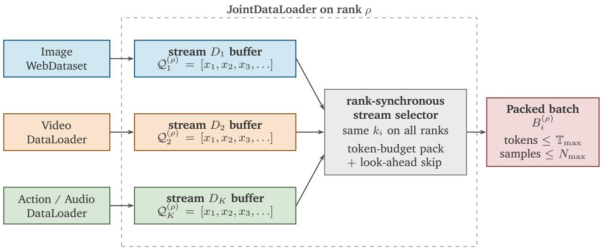

Figureure 1 · : Cosmos 3 serves as a general-purpose backbone for Physical AIFigure 1: Cosmos 3 serves as a general-purpose backbone for Physical AI. By jointly modeling language, image, video, audio, and action for both understanding and generation, Cosmos 3 unifies a wide range of model classes within a single network architecture, including vision-language models, image generation models, audio-visual generation models, policy or world-action models, forward dynamics models, and inverse dynamics models.这张图概括 Cosmos 3 的整体方法流程。阅读时先看模块之间传递的训练信号，再看作者如何把目标拆成可优化的子问题。

Figureure 12 · : Overview of the Joint Data-LoaderFigure 12: Overview of the Joint Data-Loader. Stream-specific data-loaders feed local per-stream buffers on each rank. At each global iteration, a rank-synchronous selector chooses the same stream $k _ { i }$ across distributed ranks. Each rank then greedily packs samples from its selected local buffer into $B _ { i } ^ { ( \rho ) }$ under token and sample-count budgets, using bounded look-ahead to reduce unused token capacity.这张图概括 Cosmos 3 的整体方法流程。阅读时先看模块之间传递的训练信号，再看作者如何把目标拆成可优化的子问题。